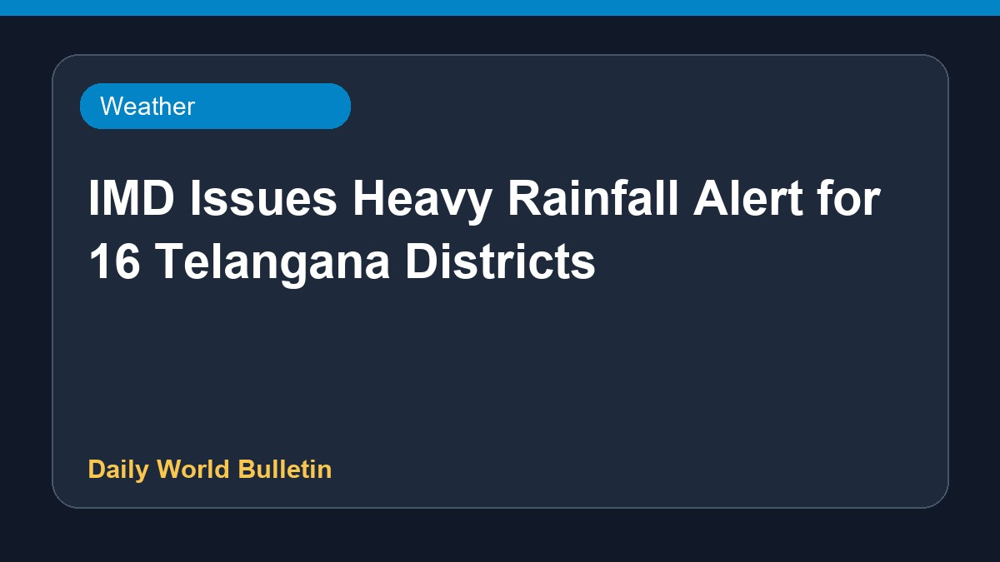

IMD Issues Heavy Rainfall Alert for 16 Telangana Districts

The India Meteorological Department has issued a heavy rainfall alert covering sixteen districts across Telangana. Official weather sources indicate that these regions should prepare for significant downpours. Residents and local authorities in the affected areas are advised to stay updated on the latest forecasts and take necessary precautions to ensure safety during the inclement weather conditions. Details regarding specific timings and exact rainfall measurements remain limited at this time.
Original source: Weather News Sources
IMD issues heavy rainfall alert for 16 Telangana districts - telanganatoday.com ↗
IMD issues heavy rainfall alert for 16 Telangana districts - telanganatoday.com ↗